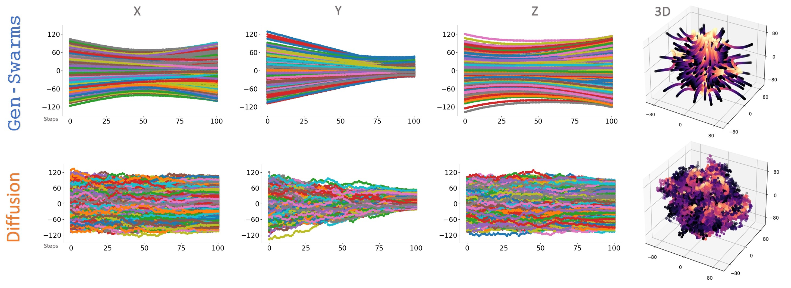
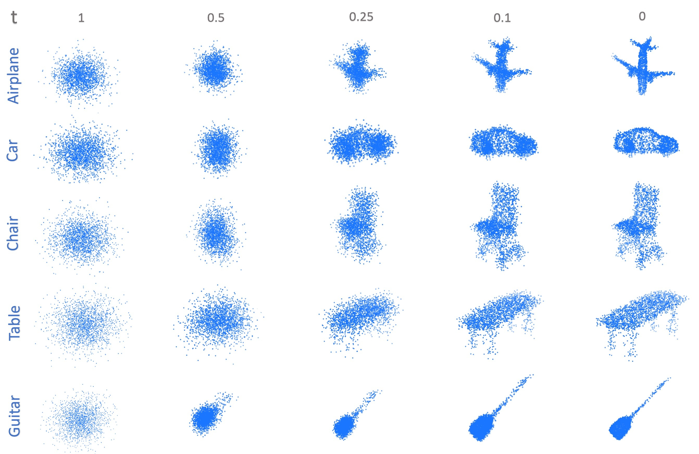

{kind=link}
Motivation
Drone shows have become a trend. However, these displays often require manual design and intervention, limiting their scalability, variety, and affordability. Therefore, applying generative models to drone shows offers a promising solution. However, a direct application of these diffusion-based methods is unfeasible since drone trajectories present: (1) lack of smoothness, and (2) continuous collisions.

Gen-Swarms
Gen-Swarms is a novel framework that leverages the strengths of 3D point clouds generative models, flow matching and reactive navigation algorithms to automatically generate drone shows. In this way, given a text category like Airplane, Gen-Swarms can rapidly and continuously generate numerous variations of 3D airplane shapes providing feasible drone trajectories towards the generated 3D shapes.
Conditional Flow Matching (CFM) for 3D point clouds
Flow matching (FM) is a relatively new strategy for making Continuous Normalizing Flows trainable, which provide smooth transitions from noise to accurate outputs. We provide the first application of flow matching algorithms to 3D point cloud generation. We incorporate an encoder to obtain a latent space representation of the 3D point cloud distribution, which conditions the posterior sampling process.

Results
Quantitative results
Gen-Swarms delivers balanced performance, excelling in collision avoidance, energy efficiency, and maintaining high quality while ensuring smooth trajectories. This is because Gen-Swarms uses CFM as a closed-loop controller with ORCA as an additional reactive navigation layer inside the loop.
Smooth Trajectories
Gen-Swarms produces smooth trajectories for each 3D component as the drones move to form a significant 3D shape.
Collision avoidance
In contrast to baselines, Gen-Swarms produce 3D accurate shapes free of collisions (red points).
Generative capabilities
Gen-Swarms is able to generate accurate 3D shapes for each category of the ShapeNet dataset.
BibTeX
@inproceedings{plou2024genswarmsadaptingdeepgenerative,
title={Gen-Swarms: Adapting Deep Generative Models to Swarms of Drones},
author={Carlos Plou and Pablo Pueyo and Ruben Martinez-Cantin and Mac Schwager and Ana C. Murillo and Eduardo Montijano},
booktitle={Proceedings of the European Conference on Computer Vision (ECCV) Workshops},
year={2024},
url={https://arxiv.org/abs/2408.15899},
archivePrefix={arXiv},
eprint={2408.15899},
primaryClass={cs.RO}
}